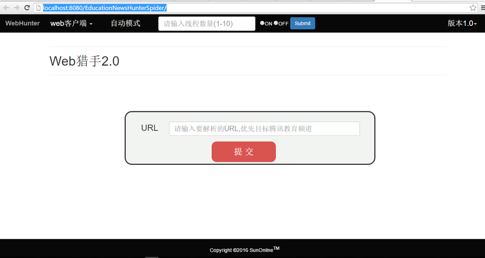
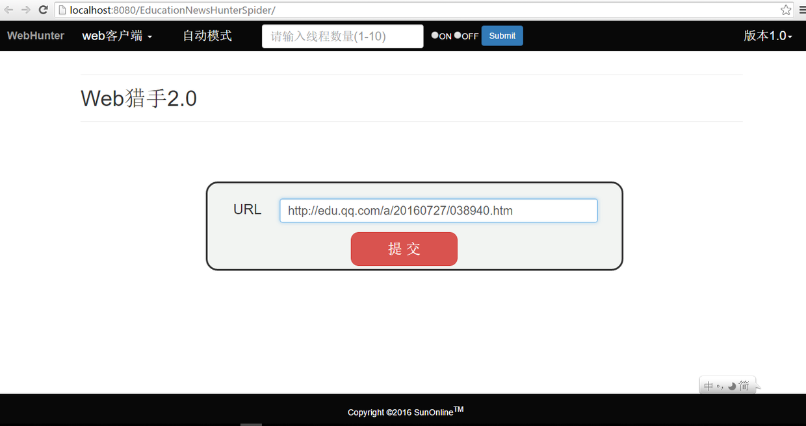
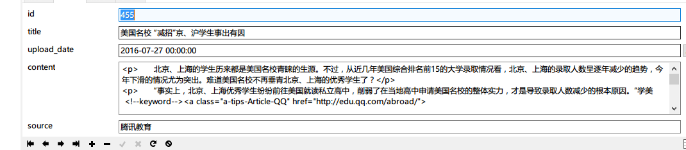
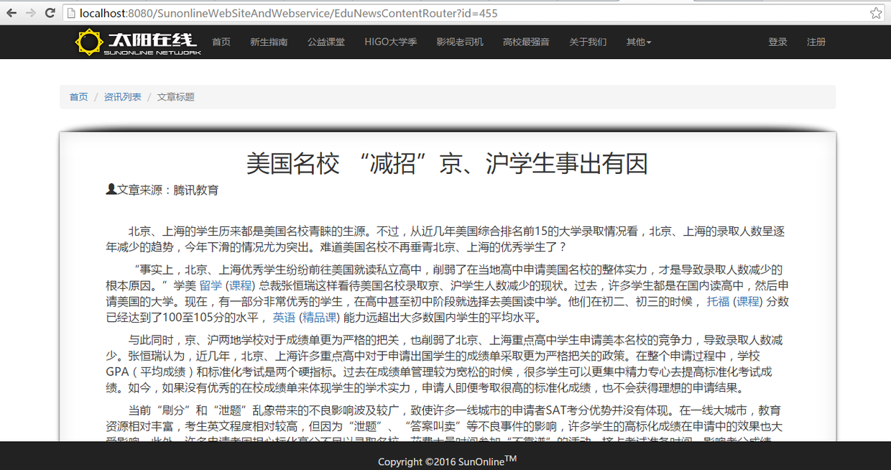
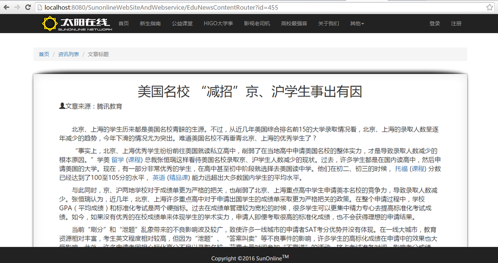
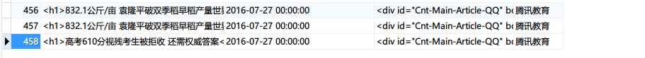
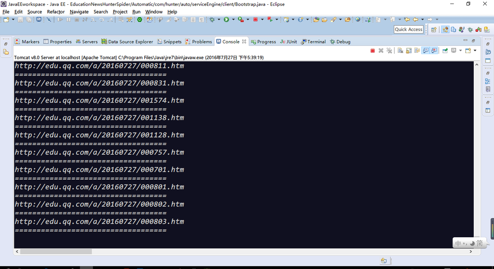

WebHunter爬虫系统介绍
WebHunter是最近开发的一款新闻爬虫系统，它分为手动和自动两种模式，可以基于web容器如tomcat运行，也能够作为客户端独立运行在命令行模式下，而且能够扩充为GUI客户端。
本文是对WebHunter爬虫系统的介绍。旨在提供一份较为明晰的文档指导用户使用。
手动模式
- 手动模式基于web平台，部署应用之后访问对应的url，此处是本地模式，即
http://localhost:8080/EducationNewsHunterSpider/ 如图launcher.png - 输入需要爬取的页面，以腾讯新闻模块为主要对象，以http://edu.qq.com/edunew/为根路径
此处选取目标链接为http://edu.qq.com/a/20160727/038940.htm，
其内容为 target.png
target.png - 输入目标链接到输入框，点击提交X@Y4VD5QWZXPK]RV8O`86KS.png
- 上方红字会提示抓取结果是否成功
 result.png
result.png - 返回结果为“数据添加成功，请继续添加”，查看数据库确认是否持久化成功database_result.png
- 打开新闻展示页面，进一步确认结果
 (newsmenu.pngnewscontent.png
(newsmenu.pngnewscontent.png - 手动模式运行方式基本如上所述
自动模式，自动模式有两种启动方式
a. 命令行模式
b. web模式
命令行模式
- 应用已经打包为JavaSE的jar file，因此可以在命令行中通过java -jar filename加载，如图
 CLI.png
CLI.png - 命令行下显示为“持久化成功”的则可以在数据库中查看到，内部逻辑已经打包在jar中不对外显示database2.png
web模式
-
这里和手动方式相同，通过http://localhost:8080/EducationNewsHunterSpider/进入启动页
 launcher.png
launcher.png -
在上方自动模式区域输入要调用的线程数量，以及命令模式“on”/“off”
这里输入线程数为3选取on点击submit auto-launcher.png
auto-launcher.png -
进入实时抓取页面，并显示当前扫描到的url
 scanner-web.png
scanner-web.png - 同时在控制台也能实时同步抓取数据情况console.png
- 如果想要手动强制取消抓取进程，点击web界面中的“返回首页”
 scanner-web.png
scanner-web.png - 在首页上方选取“off”选项，submit
 off-web.png
off-web.png - 即可停止抓取序列
小结
本文主要从操作上对WebHunter整体做了一个详细的讲解，旨在为使用者提供一个演示文档，从而能够更直观的使用该工具抓取新闻页面。